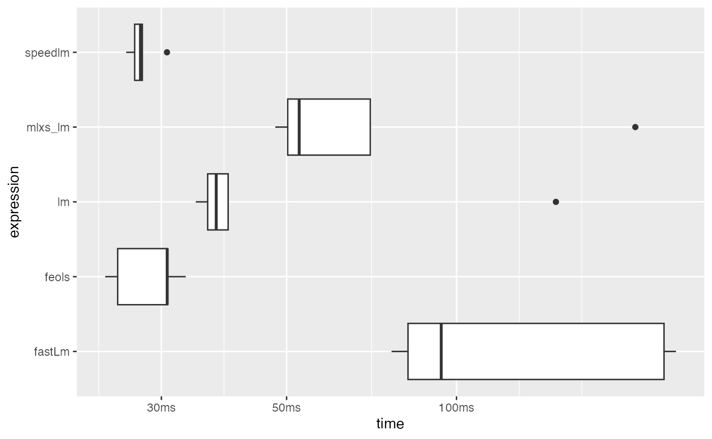
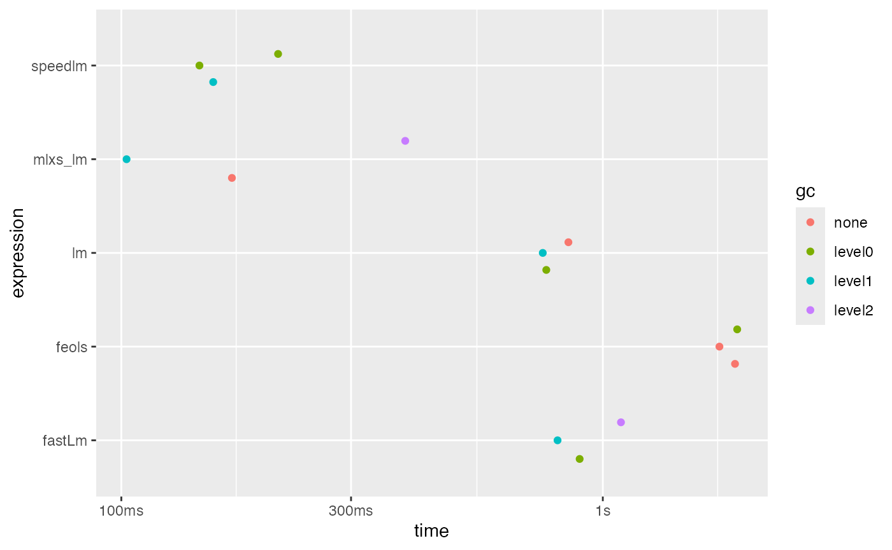
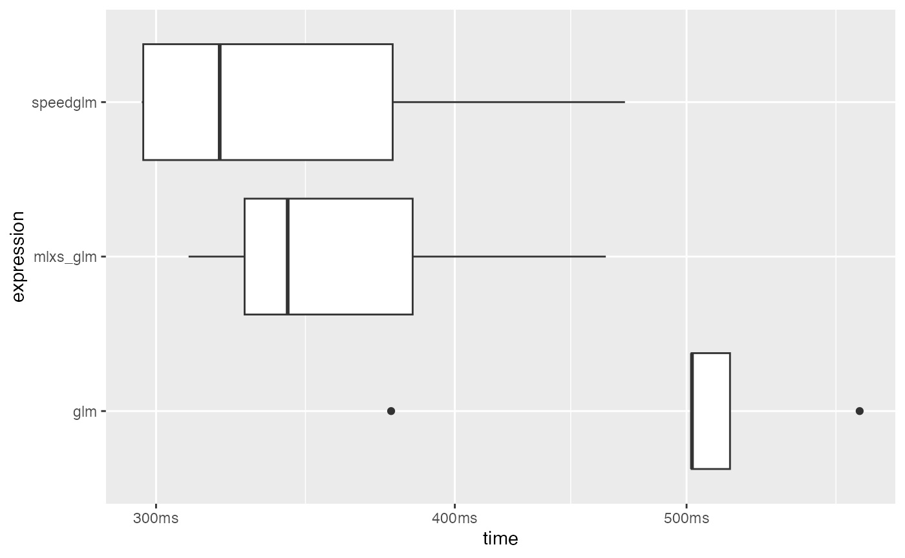
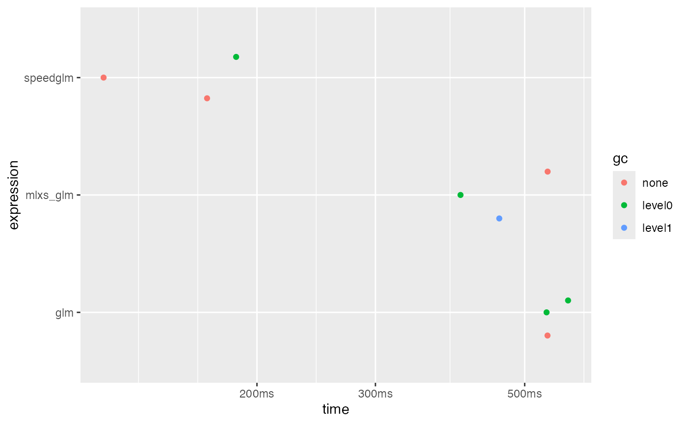
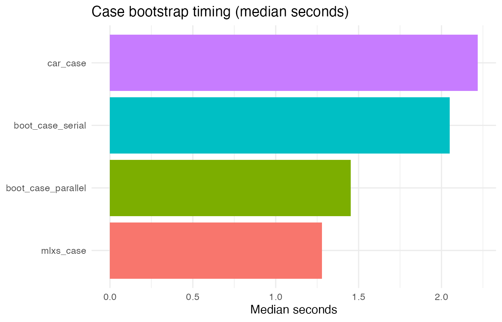
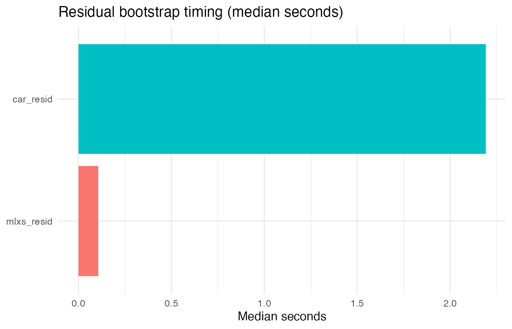
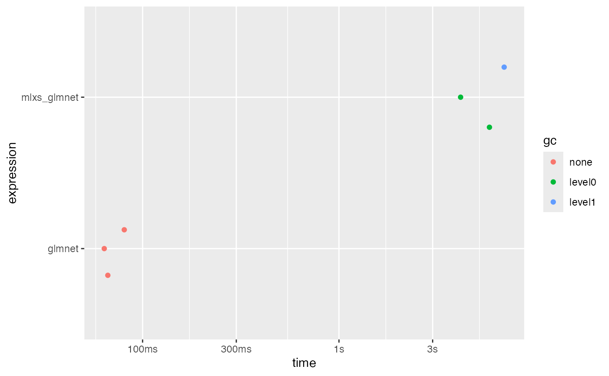

Benchmarks
benchmark-lm-mlxs.RmdThis vignette benchmarks RmlxStats against standard R functions and specialized fast fitting packages (fixest, RcppEigen, speedglm, fastglm).
Data Preparation
flights <- as.data.frame(nycflights13::flights)
vars <- c("arr_delay", "dep_delay", "air_time", "distance")
complete_rows <- complete.cases(flights[, vars])
bench_data <- flights[complete_rows, vars]
nrow(bench_data)
#> [1] 327346Benchmark Setup
We benchmark several linear model solvers.
lm_formula <- arr_delay ~ dep_delay + air_time + distance
bench_mark <- mark(
lm = lm(lm_formula, data = bench_data),
mlxs_lm = mlxs_lm(lm_formula, data = bench_data),
feols = feols(lm_formula, data = bench_data),
fastLm = RcppEigen::fastLm(lm_formula, data = bench_data),
speedlm = speedglm::speedlm(lm_formula, data = bench_data),
iterations = 5,
check = FALSE
)
#> Warning: Some expressions had a GC in every iteration; so filtering is
#> disabled.
# Summarize median timings, memory allocation, and relative speed.
bench_summary <- data.frame(
method = as.character(bench_mark$expression),
median_sec = as.numeric(bench_mark$median, units = "s"),
mem_mb = as.numeric(bench_mark$mem_alloc, units = "MB"),
itr_per_sec = bench_mark$`itr/sec`
)
bench_summary$relative <- bench_summary$median_sec / min(bench_summary$median_sec)
bench_summary
#> method median_sec mem_mb itr_per_sec relative
#> 1 lm 0.07757093 91103808 8.852935 1.746714
#> 2 mlxs_lm 0.08428329 78456800 6.791850 1.897860
#> 3 feols 0.04500304 32390888 21.999608 1.013362
#> 4 fastLm 0.17782491 116838424 4.691074 4.004196
#> 5 speedlm 0.04440964 75406984 23.848273 1.000000
ggplot2::autoplot(bench_mark, type = "boxplot")
Agreement on Flights Benchmark
We check that different fits give close results:
lm_fit <- lm(lm_formula, data = bench_data)
mlxs_fit <- mlxs_lm(lm_formula, data = bench_data)
feols_fit <- feols(lm_formula, data = bench_data)
fastlm_fit <- RcppEigen::fastLm(lm_formula, data = bench_data)
speedlm_fit <- speedglm::speedlm(lm_formula, data = bench_data)
ref_coef <- coef(lm_fit)
ref_fitted <- fitted(lm_fit)
extract_fit <- function(coef_vec, fitted_vec) {
c(
max_coef = max(abs(ref_coef - coef_vec)),
max_fitted = max(abs(ref_fitted - fitted_vec))
)
}
fits <- list(
mlxs = list(
coef = as.numeric(as.matrix(mlxs_fit$coefficients)),
fitted = as.numeric(as.matrix(mlxs_fit$fitted.values))
),
feols = list(coef = coef(feols_fit), fitted = as.numeric(predict(feols_fit))),
fastlm = list(coef = fastlm_fit$coefficients, fitted = fastlm_fit$fitted.values),
speedlm = list(coef = speedlm_fit$coefficients, fitted = as.numeric(predict(speedlm_fit)))
)
#> Warning in predict.speedlm(speedlm_fit): fitted values were not returned from the speedglm object:
#> use the original data by setting argument 'newdata' or refit
#> the model by specifying fitted=TRUE.
vapply(fits, function(f) extract_fit(f$coef, f$fitted), numeric(2))
#> Warning in max(abs(ref_fitted - fitted_vec)): no non-missing arguments to max;
#> returning -Inf
#> mlxs feols fastlm speedlm
#> max_coef 0.0001951065 8.677503e-12 8.236967e-12 8.380852e-12
#> max_fitted 0.0060091062 5.844186e-09 5.830291e-09 -InfHigh-Dimensional Benchmark
set.seed(20251031)
n_hd <- 10000
p_hd <- 400
x_hd <- matrix(rnorm(n_hd * p_hd), nrow = n_hd, ncol = p_hd)
colnames(x_hd) <- paste0("x", seq_len(p_hd))
beta_true <- runif(p_hd, -1, 1)
y_hd <- drop(x_hd %*% beta_true + rnorm(n_hd, sd = 0.5))
hd_data <- data.frame(y = y_hd, x_hd)
options(expressions = 15000) # to avoid errors due to nested evaluation
hd_formula <- DF2formula(hd_data)
hd_mark <- mark(
lm = lm(hd_formula, data = hd_data),
mlxs_lm = mlxs_lm(hd_formula, data = hd_data),
feols = feols(hd_formula, data = hd_data),
fastLm = RcppEigen::fastLm(hd_formula, data = hd_data),
speedlm = speedglm::speedlm(hd_formula, data = hd_data),
iterations = 3,
check = FALSE
)
#> Warning: Some expressions had a GC in every iteration; so filtering is
#> disabled.
hd_summary <- data.frame(
method = as.character(hd_mark$expression),
median_sec = as.numeric(hd_mark$median, units = "s"),
mem_mb = as.numeric(hd_mark$mem_alloc, units = "MB"),
itr_per_sec = hd_mark$`itr/sec`
)
hd_summary$relative <- hd_summary$median_sec / min(hd_summary$median_sec)
hd_summary
#> method median_sec mem_mb itr_per_sec relative
#> 1 lm 1.0143622 198187456 0.9769480 5.179902
#> 2 mlxs_lm 0.1958265 165871952 3.4639932 1.000000
#> 3 feols 2.2627178 81721048 0.4371632 11.554704
#> 4 fastLm 1.2321113 278407080 0.7906000 6.291851
#> 5 speedlm 0.2870077 188431080 3.4798069 1.465622
ggplot2::autoplot(hd_mark, type = "beeswarm")
Agreement on the Simulated Problem
lm_hd <- lm(hd_formula, data = hd_data)
mlxs_hd <- mlxs_lm(hd_formula, data = hd_data)
speedlm_hd <- speedglm::speedlm(hd_formula, data = hd_data)
ref_coef_hd <- coef(lm_hd)
vapply(
list(
mlxs = as.numeric(as.matrix(mlxs_hd$coefficients)),
speedlm = speedlm_hd$coefficients
),
function(coefs) max(abs(ref_coef_hd - coefs)),
numeric(1)
)
#> mlxs speedlm
#> 8.870014e-07 3.663736e-15GLM Benchmark: Logistic Regression
We benchmark mlxs_glm() against
stats::glm() and speedglm::speedglm() using a
binomial family.
# Create binary outcome: whether arrival delay exceeds 15 minutes
bench_data$late <- as.integer(bench_data$arr_delay > 15)
glm_formula <- late ~ dep_delay + air_time + distance
glm_mark <- mark(
glm = glm(glm_formula, family = binomial(), data = bench_data),
mlxs_glm = mlxs_glm(glm_formula, family = mlxs_binomial(), data = bench_data),
speedglm = speedglm::speedglm(glm_formula, family = binomial(), data = bench_data),
iterations = 5,
check = FALSE
)
#> Warning: glm.fit: fitted probabilities numerically 0 or 1 occurred
#> Warning: glm.fit: fitted probabilities numerically 0 or 1 occurred
#> Warning: glm.fit: fitted probabilities numerically 0 or 1 occurred
#> Warning: glm.fit: fitted probabilities numerically 0 or 1 occurred
#> Warning: glm.fit: fitted probabilities numerically 0 or 1 occurred
#> Warning: glm.fit: fitted probabilities numerically 0 or 1 occurred
#> Warning: Some expressions had a GC in every iteration; so filtering is
#> disabled.
glm_summary <- data.frame(
method = as.character(glm_mark$expression),
median_sec = as.numeric(glm_mark$median, units = "s"),
mem_mb = as.numeric(glm_mark$mem_alloc, units = "MB"),
itr_per_sec = glm_mark$`itr/sec`
)
glm_summary$relative <- glm_summary$median_sec / min(glm_summary$median_sec)
glm_summary
#> method median_sec mem_mb itr_per_sec relative
#> 1 glm 0.7605587 1027386600 1.240815 1.553856
#> 2 mlxs_glm 0.9845460 308571968 1.208856 2.011472
#> 3 speedglm 0.4894654 528434864 1.971054 1.000000
ggplot2::autoplot(glm_mark, type = "boxplot")
Agreement on GLM Benchmark
glm_fit <- glm(glm_formula, family = binomial(), data = bench_data)
#> Warning: glm.fit: fitted probabilities numerically 0 or 1 occurred
mlxs_glm_fit <- mlxs_glm(glm_formula, family = mlxs_binomial(), data = bench_data)
speedglm_fit <- speedglm::speedglm(glm_formula, family = binomial(), data = bench_data)
ref_coef_glm <- coef(glm_fit)
ref_fitted_glm <- fitted(glm_fit)
glm_targets <- list(
mlxs = list(
coef = as.numeric(as.matrix(mlxs_glm_fit$coefficients)),
fitted = as.numeric(as.matrix(mlxs_glm_fit$fitted.values))
),
speedglm = list(
coef = speedglm_fit$coefficients,
fitted = as.numeric(predict(speedglm_fit))
)
)
#> Warning in predict.speedglm(speedglm_fit): fitted values were not returned from the speedglm object:
#> use the original data by setting argument 'newdata' or refit
#> the model by specifying fitted=TRUE.
vapply(
glm_targets,
function(fit) c(
max_coef = max(abs(ref_coef_glm - fit$coef)),
max_fitted = max(abs(ref_fitted_glm - fit$fitted))
),
numeric(2)
)
#> Warning in max(abs(ref_fitted_glm - fit$fitted)): no non-missing arguments to
#> max; returning -Inf
#> mlxs speedglm
#> max_coef 2.301809e-05 2.381206e-12
#> max_fitted 9.950734e-06 -InfHigh-dimensional GLM Benchmark
set.seed(20251103)
n_glm <- 5000
p_glm <- 200
x_glm <- matrix(rnorm(n_glm * p_glm), nrow = n_glm, ncol = p_glm)
colnames(x_glm) <- paste0("x", seq_len(p_glm))
beta_glm <- runif(p_glm, -0.5, 0.5)
linpred <- drop(x_glm %*% beta_glm)
prob <- 1 / (1 + exp(-linpred))
y_glm <- rbinom(n_glm, size = 1, prob = prob)
glm_hd_data <- data.frame(y = y_glm, x_glm)
glm_hd_formula <- y ~ .
glm_hd_mark <- mark(
glm = glm(glm_hd_formula, family = binomial(), data = glm_hd_data,
control = list(maxit = 50)),
mlxs_glm = mlxs_glm(glm_hd_formula, family = mlxs_binomial(), data = glm_hd_data,
control = list(maxit = 50, epsilon = 1e-6)),
speedglm = speedglm::speedglm(glm_hd_formula, family = binomial(), data = glm_hd_data),
iterations = 3,
check = FALSE
)
#> Warning: Some expressions had a GC in every iteration; so filtering is
#> disabled.
glm_hd_summary <- data.frame(
method = as.character(glm_hd_mark$expression),
median_sec = as.numeric(glm_hd_mark$median, units = "s"),
mem_mb = as.numeric(glm_hd_mark$mem_alloc, units = "MB"),
itr_per_sec = glm_hd_mark$`itr/sec`
)
glm_hd_summary$relative <- glm_hd_summary$median_sec / min(glm_hd_summary$median_sec)
glm_hd_summary
#> method median_sec mem_mb itr_per_sec relative
#> 1 glm 0.7848339 167405736 1.289784 3.588220
#> 2 mlxs_glm 0.6492868 44611040 1.512865 2.968506
#> 3 speedglm 0.2187251 120938016 4.843523 1.000000
ggplot2::autoplot(glm_hd_mark, type = "beeswarm")
Convergence on the High-dimensional Problem
glm_hd_fit <- glm(glm_hd_formula, family = binomial(), data = glm_hd_data,
control = list(maxit = 50))
mlxs_hd_fit <- mlxs_glm(glm_hd_formula, family = mlxs_binomial(), data = glm_hd_data,
control = list(maxit = 50, epsilon = 1e-6))
list(
observations = nrow(glm_hd_data),
predictors = ncol(glm_hd_data) - 1,
mlxs_converged = mlxs_hd_fit$converged,
mlxs_iterations = mlxs_hd_fit$iter,
max_coefficient_difference = max(abs(coef(glm_hd_fit) - as.numeric(as.matrix(mlxs_hd_fit$coefficients)))),
max_fitted_difference = max(abs(fitted(glm_hd_fit) - as.numeric(as.matrix(mlxs_hd_fit$fitted.values))))
)
#> $observations
#> [1] 5000
#>
#> $predictors
#> [1] 200
#>
#> $mlxs_converged
#> [1] TRUE
#>
#> $mlxs_iterations
#> [1] 6
#>
#> $max_coefficient_difference
#> [1] 2.398813e-07
#>
#> $max_fitted_difference
#> [1] 9.602293e-07Bootstrap Benchmarks for summary.mlxs_lm/_glm
For the base case bootstrap we also try boot::boot()
with multi-core execution, since most Apple Silicon machines expose
several cores.
set.seed(20251110)
n_boot <- 10000L
p_boot <- 50L
x_boot <- matrix(rnorm(n_boot * p_boot), nrow = n_boot)
colnames(x_boot) <- sprintf("x%02d", seq_len(p_boot))
beta_boot <- rnorm(p_boot + 1L)
y_boot <- beta_boot[1L] + x_boot %*% beta_boot[-1L] + rnorm(n_boot, sd = 0.5)
boot_data <- data.frame(y = drop(y_boot), x_boot)
fit_mlxs_boot <- mlxs_lm(y ~ ., data = boot_data)
fit_base_boot <- lm(y ~ ., data = boot_data)
boot_stat <- function(dat, idx) {
d <- dat[idx, , drop = FALSE]
coef(lm(y ~ ., data = d))
}
parallel_cores <- max(1L, parallel::detectCores(logical = FALSE) - 1L)
case_boot_mark <- bench::mark(
mlxs_case = {
sum_case <- summary(
fit_mlxs_boot,
bootstrap = TRUE,
bootstrap_args = list(
B = 50L,
seed = 42,
bootstrap_type = "case",
progress = FALSE
)
)
as.numeric(as.matrix(sum_case$std.error))
},
boot_case_serial = boot::boot(
boot_data,
statistic = boot_stat,
R = 50L,
parallel = "no"
),
boot_case_parallel = boot::boot(
boot_data,
statistic = boot_stat,
R = 50L,
parallel = "multicore",
ncpus = parallel_cores
),
car_case = car::Boot(fit_base_boot, f = coef, R = 50L, method = "case"),
iterations = 3,
check = FALSE,
memory = FALSE
)
#> Warning: Some expressions had a GC in every iteration; so filtering is
#> disabled.
resid_boot_mark <- bench::mark(
mlxs_resid = {
sum_resid <- summary(
fit_mlxs_boot,
bootstrap = TRUE,
bootstrap_args = list(
B = 50L,
seed = 99,
bootstrap_type = "residual",
progress = FALSE
)
)
as.numeric(as.matrix(sum_resid$std.error))
},
car_resid = car::Boot(fit_base_boot, f = coef, R = 50L, method = "residual"),
iterations = 3,
check = FALSE,
memory = FALSE
)
#> Warning: Some expressions had a GC in every iteration; so filtering is
#> disabled.
case_summary <- data.frame(
method = as.character(case_boot_mark$expression),
median_sec = as.numeric(case_boot_mark$median, units = "s"),
itr_per_sec = case_boot_mark$`itr/sec`,
gc_per_sec = case_boot_mark$`gc/sec`
)
case_summary$relative <- case_summary$median_sec / min(case_summary$median_sec)
case_summary <- case_summary[order(case_summary$median_sec), ]
resid_summary <- data.frame(
method = as.character(resid_boot_mark$expression),
median_sec = as.numeric(resid_boot_mark$median, units = "s"),
itr_per_sec = resid_boot_mark$`itr/sec`,
gc_per_sec = resid_boot_mark$`gc/sec`
)
resid_summary$relative <- resid_summary$median_sec / min(resid_summary$median_sec)
resid_summary <- resid_summary[order(resid_summary$median_sec), ]
list(
parallel_cores = parallel_cores,
case = case_summary,
residual = resid_summary
)
#> $parallel_cores
#> [1] 2
#>
#> $case
#> method median_sec itr_per_sec gc_per_sec relative
#> 1 mlxs_case 1.279820 0.6786362 0.2262121 1.000000
#> 3 boot_case_parallel 1.452484 0.3997992 1.7324631 1.134912
#> 2 boot_case_serial 2.050334 0.4135386 2.4812318 1.602048
#> 4 car_case 2.218234 0.4731727 2.5235877 1.733239
#>
#> $residual
#> method median_sec itr_per_sec gc_per_sec relative
#> 1 mlxs_resid 0.1574942 5.1960336 0.000000 1.00000
#> 2 car_resid 2.2435731 0.4418535 2.209268 14.24544
plot_boot_summary <- function(df, title) {
df$method <- factor(df$method, levels = df$method[order(df$median_sec)])
ggplot(df, aes(x = method, y = median_sec, fill = method)) +
geom_col(show.legend = FALSE) +
labs(
title = title,
x = NULL,
y = "Median seconds"
) +
coord_flip() +
theme_minimal(base_size = 12)
}
case_plot <- plot_boot_summary(case_summary, "Case bootstrap timing (median seconds)")
resid_plot <- plot_boot_summary(resid_summary, "Residual bootstrap timing (median seconds)")
case_plot
resid_plot
## Elastic Net on Flights Data
``` r
set.seed(20251103)
enet_rows <- 50000
enet_idx <- sample.int(nrow(bench_data), enet_rows)
enet_base <- bench_data[enet_idx, ]
enet_design <- model.matrix(
~ poly(dep_delay, 3) + poly(air_time, 3) + poly(distance, 3)
+ poly(dep_delay, 2):poly(air_time, 2)
+ poly(dep_delay, 2):poly(distance, 2)
+ poly(air_time, 2):poly(distance, 2),
data = enet_base
)
x_enet <- enet_design[, -1, drop = FALSE]
y_enet <- enet_base$arr_delay > 15
lambda_enet <- 0.01
enet_mark <- mark(
glmnet = glmnet::glmnet(x_enet, y_enet, family = "binomial", alpha = 1,
lambda = lambda_enet, standardize = TRUE,
thresh = 1e-6, maxit = 100000),
mlxs_glmnet = mlxs_glmnet(x_enet, y_enet, family = mlxs_binomial(), alpha = 1,
lambda = lambda_enet, standardize = TRUE,
maxit = 2000, tol = 1e-6),
iterations = 3,
check = FALSE
)
#> Warning: Some expressions had a GC in every iteration; so filtering is
#> disabled.
enet_summary <- data.frame(
method = as.character(enet_mark$expression),
median_sec = as.numeric(enet_mark$median, units = "s"),
mem_mb = as.numeric(enet_mark$mem_alloc, units = "MB"),
itr_per_sec = enet_mark$`itr/sec`
)
enet_summary$relative <- enet_summary$median_sec / min(enet_summary$median_sec)
enet_summary
#> method median_sec mem_mb itr_per_sec relative
#> 1 glmnet 0.05733473 22542592 16.6170111 1.00000
#> 2 mlxs_glmnet 5.24678456 46222304 0.1767395 91.51146
ggplot2::autoplot(enet_mark, type = "beeswarm")
enet_ref <- glmnet::glmnet(x_enet, y_enet, family = "binomial", alpha = 1,
lambda = lambda_enet, standardize = TRUE,
thresh = 1e-6, maxit = 100000)
enet_fit <- mlxs_glmnet(x_enet, y_enet, family = mlxs_binomial(), alpha = 1,
lambda = lambda_enet, standardize = TRUE,
maxit = 2000, tol = 1e-6)
c(
coefficients_max_difference = max(abs(as.numeric(enet_ref$beta) - enet_fit$beta[, 1])),
intercept_difference = abs(as.numeric(enet_ref$a0) - enet_fit$a0[1])
)
#> coefficients_max_difference intercept_difference
#> 0.5963112556 0.0005400035